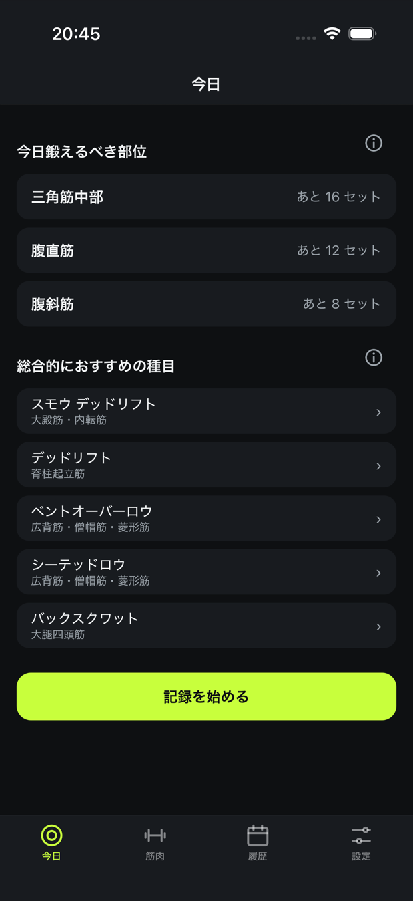
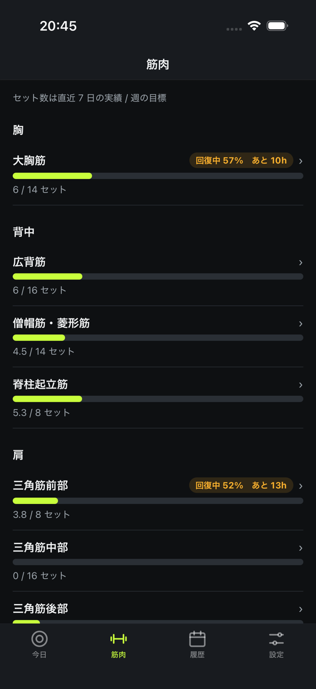
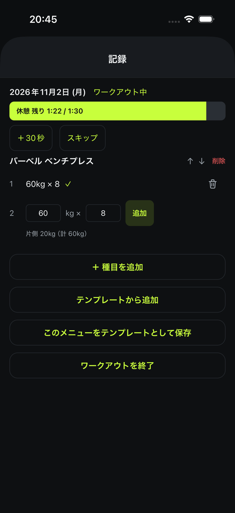
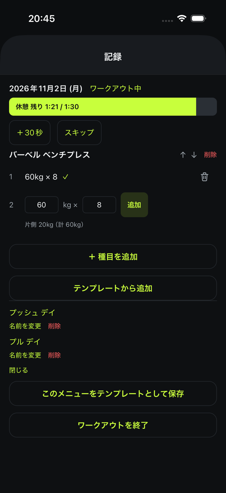
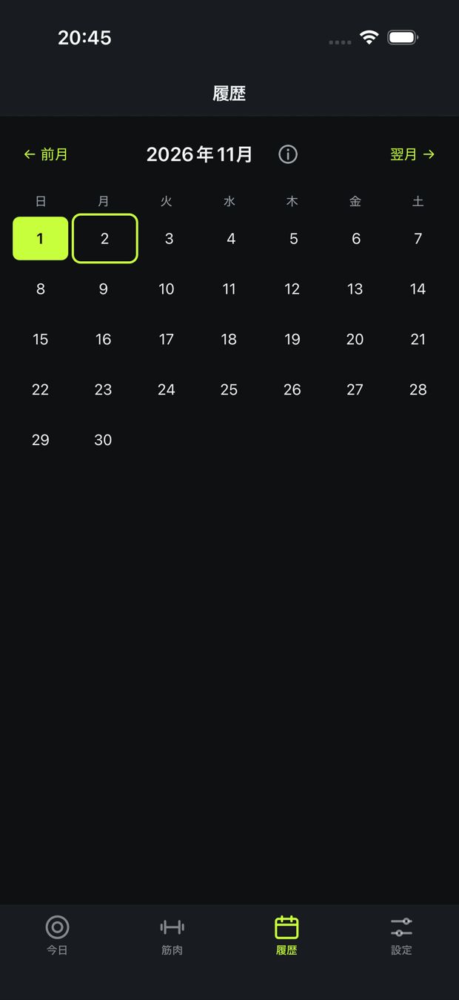

Volstra は、記録したセットから筋肉 17 部位それぞれの刺激量と回復度を計算し、 今日鍛えるべき部位を提案します。提案の根拠になった数字も、そのまま画面に出します。
App Store で入手無料 ・ iPhone / iOS 16.4 以上

だから Volstra は、提案と一緒にその根拠を並べます。どの部位がどこまで回復したのか、 週の目標に対してあと何セット残っているのか。画面でそのまま確かめられます。
根拠が見えるので、提案に従うかどうかは自分で決められます。
セット数は直近 7 日の実績 / 週の目標
実際のアプリの画面です。

17 部位の回復度とセット数。胸・背中・肩のまとまりで見られます。

重量とレップを入れるだけ。休憩タイマーは自動で始まり、プレートの枚数も出ます。

「プッシュ デイ」のように保存したメニューを、次回まとめて呼び出せます。

トレーニングした日がカレンダーで一覧できます。過去の日にあとから足すこともできます。
標準で 70 種目を収録しています。
回復状況と、週の目標までの残りから順位を付けます。
17 部位を 0〜100% で表示します。
標準 70 種目から、狙う部位に効くものを出します。
ウォームアップのセットは自動で判別します。
セットを記録すると自動で始まります。
目標重量に対して、片側に何をつけるかを表示します。
種目ごとにグラフで追えます。
似ている種目からコピーして追加できます。
過去の日付にあとから記録を足せます。
JSON で書き出し・読み込み。自動バックアップつき。
準備なしに使い始められること、記録をいつでも取り出せることを前提に作っています。
登録もログインもありません。入れたその場で使い始められます。
通信が無くても、記録も提案もそのまま動きます。電波の届かない地下のジムでも同じです。
JSON でまるごと書き出し・読み込みができます。自動バックアップも取っています。
回復度は、記録された刺激量と経過時間から計算した目安です。体調・睡眠・栄養などは考慮していません。 実際にトレーニングを行うかどうかは、ご自身の判断でお願いします。